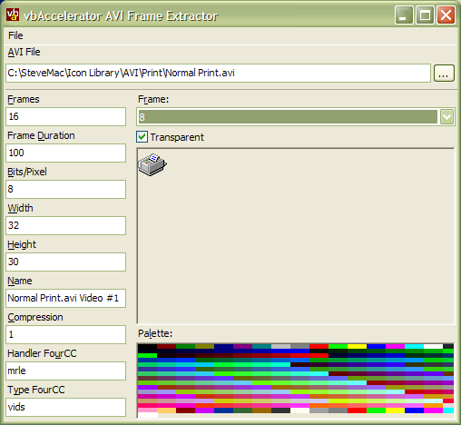

VB5 AVI Extractor (73K)
VB5 AVI Extractor (73K)
 VB6 AVI Extractor (70K)
VB6 AVI Extractor (70K)
 23 Nov 2003
23 Nov 2003
First Posted
 Transparent AVI Player Control
Transparent AVI Player Control
 ComCtl32.DLL Animation Control Class
ComCtl32.DLL Animation Control Class
 Reading Data from Local or External Library Resources
Reading Data from Local or External Library Resources

AVI Frame Extractor
Code for extracting individual frames from AVI Streams.
The AVI Frame Extractor code provided here allows you to extract and display individual frames from AVIs. This can be useful if you're trying to create a derivative of an existing AVI as you can extract each of the frames and either edit them in a painting package or write a program to do it. There's also some code in there to save a 256 colour bitmap using Run-Length Encoding.
About The Code
The code provides the following main classes for working with AVI streams:
- cAVIFrameExtract
The main class, providing methods for opening AVIs, interogating their properties and drawing or extracting frames. This code is similar to the code used in the Transparent AVI Player control. - cPalette
A class for reading the palette associated with 8 bits/pixel AVIs. - cBmp
Wrapper class around a Windows API bitmap used internally for processing the frames.
The following supplementary classes are also provided:
- cMemDC
A wrapper around a Windows API memory DC, which can be used for painting with cBmp objects. - cDIBSectionSave
Utility class for saving a cBmp object as a Windows bitmap to disk. Allows you to save 8 or 24 bits/pixel bitmaps, and to use RLE8 encoding if the image is 8 bits/pixel.
Extracting and Drawing AVI Frames
The following code demonstrates how to open an AVI and draw each of the frames:
Dim cAVI As New cAVIFrameExtract
' Set the file name of the AVI to read:
cAVI.Filename = sAVIFile
' Read the general properties:
' Number of frames:
txtInfo(0).Text = m_cAVI.FrameCount
' Length of each frame in ms
txtInfo(1).Text = m_cAVI.FrameDuration
' Bits/Pixel of the AVI:
txtInfo(2).Text = m_cAVI.bitsPerPixel
' Size of the frames:
txtInfo(3).Text = m_cAVI.Width
txtInfo(4).Text = m_cAVI.Height
' Name of the AVI:
txtInfo(5).Text = m_cAVI.Name
' Video Handler FourCC code (e.g. 'mrle'):
txtInfo(7).Text = m_cAVI.VideoHandlerFourCCString
' Multimedia stream type (always 'vids'):
txtInfo(8).Text = m_cAVI.VideoTypeFourCCString
' Now draw each of the frames onto the form:
Dim i As Long
Dim y As Long
For i = 1 to m_cAVI.FrameCount
DrawFrame Me.hDC, i, 8, y
y = y + m_cAVI.Height
Next i
One of the most frequently needed operations is to draw an AVI frame transparently over an existing background. To make this easier, DrawFrame has a Transparent parameter. Setting this allows you to render the AVI over any existing background.
Sources of AVI
Other than the AVIs provided with the download, you can get some more to play with from the Graphics Library or by using the Resource Extractor application to extract AVIs from a DLL which contains them (Shell32.DLL is a good place to start).
Conclusion
This article provides code for programmatically extracting frames from AVIs, allowing them to be displayed, saved and/or manipulated prior to display. You could use this code as part of an AVI editing application or to customise the display of an AVI in an application.